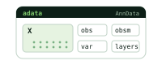
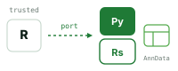
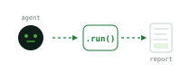

One API, AnnData throughout
Bulk, single-cell, spatial and multi-modal data share the same calls and conventions.
About
One library exposes the API. Around it, the organization rebuilds trusted R methods in Python and Rust, verifies them against the originals, and makes everything runnable by analysis agents.

Bulk, single-cell, spatial and multi-modal data share the same calls and conventions.

Hot loops in Rust, tensor methods on Torch, classical statistics on NumPy and SciPy.
Ports are gated on numerical parity with the R reference before release.

omicverse-skills and omicclaw let agents run the stack.
Ports, runtime, agents and docs each have a named maintainer who reviews and releases.
Design discussion happens in GitHub Issues and Discussions. No maintainer status needed to contribute.
Public API, AnnData contract or benchmark changes go through a public RFC.
Contributor Covenant. Reports go to the maintainer contact in the org README.
Stable monthly, patches as needed, each with changelog and parity diffs.
Funding and research-group acknowledgments live next to the code they support.
If you use OmicVerse in published work, please cite the framework paper. For a specific port, also cite the original method.
@article{omicverse, title = "OmicVerse: a unified multi-omics analysis framework", author = "Zeng, Zehua and others", journal = "Nature Communications", year = "2024", url = "https://github.com/omicverse/omicverse" }
Replace this entry with the canonical citation from the project README before publishing.